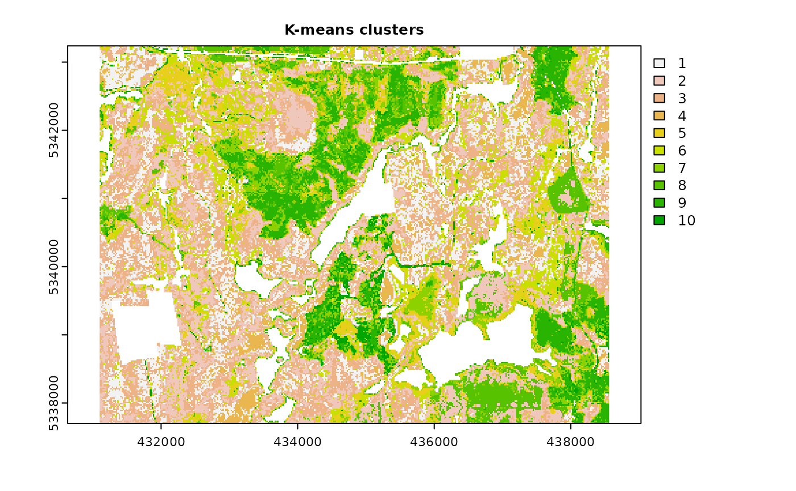
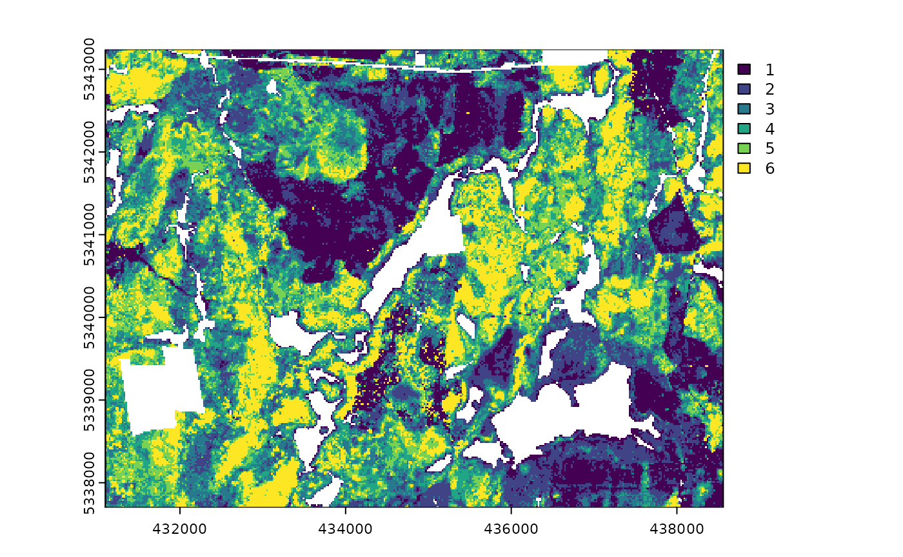
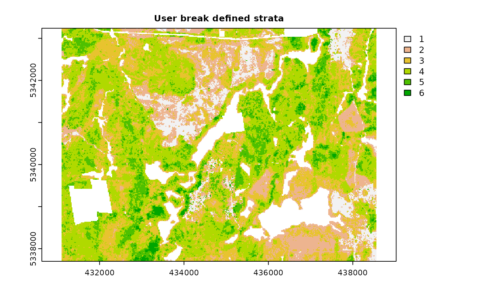

Fundamental to many structurally guided sampling approaches is the
use of stratification methods that allow for more effective and
representative sampling protocols. Below, I will identify the
stratification methods included in sgsR and demonstrate
some worked examples for each functions.
Currently, there are 5 functions associated with the
strat verb in the sgsR package:
strat_kmeans()- kmeans stratificationstrat_quantiles()- quantile stratificationstrat_breaks()- user-defined break stratificationstrat_poly()- polygon attribute stratificationstrat_map()- maps (combines) 2 stratifications
strat_kmeans
We will demonstrate a preliminary example of using the
strat_kmeans() algorithm to prepare our
sraster input data and provide additional examples
below.
#--- perform stratification using k-means ---#
strat_kmeans(mraster = mraster, # input
nStrata = 5) # algorithm will produce 4 strata
#> class : SpatRaster
#> dimensions : 277, 373, 1 (nrow, ncol, nlyr)
#> resolution : 20, 20 (x, y)
#> extent : 431100, 438560, 5337700, 5343240 (xmin, xmax, ymin, ymax)
#> coord. ref. : UTM Zone 17, Northern Hemisphere
#> source : memory
#> name : strata
#> min value : 1
#> max value : 5Notice that the code above did not plot anything. This is because
plot = FALSE is set as the default for all functions in the
sgsR package. Below, we will demonstrate examples where the
plot = TRUE was set.
strat_kmeans(mraster = mraster, # input
nStrata = 10, # algorithm will produce 10 strata
iter = 1000, # set minimum number of iterations to determine kmeans centers
algorithm = "MacQueen", # use MacQueen algorithm
plot = TRUE) # plot output
#> class : SpatRaster
#> dimensions : 277, 373, 1 (nrow, ncol, nlyr)
#> resolution : 20, 20 (x, y)
#> extent : 431100, 438560, 5337700, 5343240 (xmin, xmax, ymin, ymax)
#> coord. ref. : UTM Zone 17, Northern Hemisphere
#> source : memory
#> name : strata
#> min value : 1
#> max value : 10
strat_quantiles
The strat_quantiles() algorithm divides data into
equally sized strata (nStrata). Similar to the
strat_breaks() function, the (quantile) algorithm have the
capability to perform stratification on a single mraster;
users can also input a secondary mraster
(mraster2) and specify the number associated with the
desired strata (nStrata2). Note that the dual
stratification output will result in a product of \(nStrata * nStrata2\).
#--- perform quantiles stratification ---#
strat_quantiles(mraster = mraster$zq90,
nStrata = 6,
plot = TRUE)#> class : SpatRaster
#> dimensions : 277, 373, 1 (nrow, ncol, nlyr)
#> resolution : 20, 20 (x, y)
#> extent : 431100, 438560, 5337700, 5343240 (xmin, xmax, ymin, ymax)
#> coord. ref. : UTM Zone 17, Northern Hemisphere
#> source : memory
#> name : strata
#> min value : 1
#> max value : 6
#--- dual stratification - will produce 12 output strata ---#
strat_quantiles(mraster = mraster$zq90,
mraster2 = mraster$zsd,
nStrata = 3,
nStrata2 = 4)
#> class : SpatRaster
#> dimensions : 277, 373, 1 (nrow, ncol, nlyr)
#> resolution : 20, 20 (x, y)
#> extent : 431100, 438560, 5337700, 5343240 (xmin, xmax, ymin, ymax)
#> coord. ref. : UTM Zone 17, Northern Hemisphere
#> source : memory
#> name : strata
#> min value : 1
#> max value : 12
strat_breaks
strat_breaks() function stratifies the data based on the
breaks in covariates that the user defines. Single mraster
can be defined or additional mraster2 can also be defined.
breaks and breaks2 coincide with the user
defined breaks for mraster and mraster2
respectively.
#--- perform stratification using user-defined breaks ---#
#--- define breaks for metric ---#
breaks <- c(seq(0,100,20))
breaks
#> [1] 0 20 40 60 80 100
#--- perform stratification using user-defined breaks ---#
values <- terra::values(mraster$zq90)
#--- define breaks for metric ---#
breaks2 <- c(5,10,15,20,25)
breaks2
#> [1] 5 10 15 20 25Once the breaks are created, we can use them as input into the
strat_breaks function using the breaks and
breaks2 parameters.
#--- stratify on 1 metric only ---#
strat_breaks(mraster = mraster$pzabove2,
breaks = breaks,
plot = TRUE)
#> class : SpatRaster
#> dimensions : 277, 373, 1 (nrow, ncol, nlyr)
#> resolution : 20, 20 (x, y)
#> extent : 431100, 438560, 5337700, 5343240 (xmin, xmax, ymin, ymax)
#> coord. ref. : UTM Zone 17, Northern Hemisphere
#> source : memory
#> name : strata
#> min value : 1
#> max value : 6
#--- stratify on 1 metric only ---#
strat_breaks(mraster = mraster$zq90,
breaks = breaks2,
plot = TRUE)
#> class : SpatRaster
#> dimensions : 277, 373, 1 (nrow, ncol, nlyr)
#> resolution : 20, 20 (x, y)
#> extent : 431100, 438560, 5337700, 5343240 (xmin, xmax, ymin, ymax)
#> coord. ref. : UTM Zone 17, Northern Hemisphere
#> source : memory
#> name : strata
#> min value : 1
#> max value : 6
strat_poly
The strat_poly() algorithm stratifies the input based on
spatial polygon attributes and features. Users may wish to stratify
based on categorical or empirical variables that are not available
through ALS data (e.g. species from forest inventory polygons). This
function allows the user to define the attribute of interest as well as
how the features within the attribute are to be grouped for
stratification.
Users define the input poly and its associated
attribute. A raster layer must be defined to
guide the spatial extent and resolution for the output stratification
polygon. Based on the vector or list of features,
stratification is applied and the polygon is rasterized into its
appropriate strata.
#--- load in polygon coverage ---#
poly <- system.file("extdata", "inventory_polygons.shp", package = "sgsR")
fri <- sf::st_read(poly)
#> Reading layer `inventory_polygons' from data source
#> `/home/runner/work/_temp/Library/sgsR/extdata/inventory_polygons.shp'
#> using driver `ESRI Shapefile'
#> Simple feature collection with 632 features and 3 fields
#> Geometry type: MULTIPOLYGON
#> Dimension: XY
#> Bounding box: xmin: 431100 ymin: 5337700 xmax: 438560 ymax: 5343240
#> Projected CRS: UTM_Zone_17_Northern_Hemisphereattribute column within the polygon must be defined and
the features (within the attribute) must be
specified to define the composition of the output strata. In our
demonstration below, attribute = "NUTRIENTS" and features
within NUTRIENTS (poor, rich, medium) will define the 3
desired output classes.
#--- stratify polygon coverage ---#
#--- specify polygon attribute to stratify ---#
attribute <- "NUTRIENTS"
#--- specify features within attribute & how they should be grouped ---#
#--- as a single vector ---#
features <- c("poor", "rich", "medium")
srasterpoly <- strat_poly(poly = fri, # input polygon
attribute = attribute, # attribute to stratify by
features = features, # features within attribute
raster = sraster, # raster to define extent and resolution for output
plot = TRUE) # plot output
features can be converted into amalgamated classes. In
our demonstration below, rich and medium
features are combined together, while low is left in
isolation. The 2 vectors are specified into a list, which will result in
the output of 2 classes (low & rich/medium).
#--- or as multiple lists ---#
g1 <- "poor"
g2 <- c("rich", "medium")
features <- list(g1, g2)
strat_poly(poly = fri,
attribute = attribute,
features = features,
raster = sraster,
plot = TRUE,
details = TRUE)#> $raster
#> class : SpatRaster
#> dimensions : 277, 373, 1 (nrow, ncol, nlyr)
#> resolution : 20, 20 (x, y)
#> extent : 431100, 438560, 5337700, 5343240 (xmin, xmax, ymin, ymax)
#> coord. ref. : UTM Zone 17, Northern Hemisphere
#> source : memory
#> name : strata
#> min value : 1
#> max value : 2
#>
#> $lookUp
#> strata features
#> 1 1 poor
#> 2 2 rich
#> 3 2 medium
#>
#> $poly
#> class : SpatVector
#> geometry : polygons
#> dimensions : 524, 2 (geometries, attributes)
#> extent : 431100, 438560, 5337700, 5343240 (xmin, xmax, ymin, ymax)
#> coord. ref. : UTM_Zone_17_Northern_Hemisphere
#> names : features strata
#> type : <chr> <int>
#> values : poor 1
#> poor 1
#> poor 1You may have noticed that the details parameter was
present in the demonstration code above. details parameter
returns the output outRaster, the $lookUp
table associated with the strata, and the polygon ($poly)
is created to drive the stratification based on attributes and features
specified by the users.
strat_map
There are situations where multiple levels of stratification may be
sought-after. For instance, the user may wish to combine the output from
strat_poly() (see the demonstration above) with 3 classes,
with the 4 class kmeans stratification generated above in this
vignette.
The total number of classes of the output is multiplicative of the
number of the strata. For example, if sraster has 3 strata
and sraster2 has 4 strata, then the output of
strat_map() will be 12 strata in total. There may be
occasions where stratum do not interact spatially, this will result in
fewer output strata.
#--- map srasters ---#
strat_map(sraster = srasterpoly, # strat_poly 3 class stratification
sraster2 = sraster, # strat_kmeans 4 class stratification
plot = TRUE)
#> class : SpatRaster
#> dimensions : 277, 373, 1 (nrow, ncol, nlyr)
#> resolution : 20, 20 (x, y)
#> extent : 431100, 438560, 5337700, 5343240 (xmin, xmax, ymin, ymax)
#> coord. ref. : UTM Zone 17, Northern Hemisphere
#> source : memory
#> categories : label
#> name : strata
#> min value : 11
#> max value : 34The convention for the numeric value of the output strata is the
concatenation (merging) of sraster strata and
sraster2 strata. Check $lookUP for a clear
depiction of this step.
strat_map(sraster = srasterpoly, # strat_poly 3 class stratification
sraster2 = sraster, # strat_poly 3 class stratification
stack = TRUE, # stack input and output strata into multi layer output raster
details = TRUE, # provide additional details
plot = TRUE) # plot output
#> Stacking sraster, sraster2, and their combination (stratamapped).
#> $raster
#> class : SpatRaster
#> dimensions : 277, 373, 3 (nrow, ncol, nlyr)
#> resolution : 20, 20 (x, y)
#> extent : 431100, 438560, 5337700, 5343240 (xmin, xmax, ymin, ymax)
#> coord. ref. : UTM Zone 17, Northern Hemisphere
#> sources : memory
#> memory
#> memory
#> names : strata, strata2, stratamapped
#> min values : 1, 1, 11
#> max values : 3, 4, 34
#>
#> $lookUp
#> strata strata2 stratamapped
#> 1 3 2 32
#> 2 3 1 31
#> 3 1 3 13
#> 4 1 4 14
#> 5 3 4 34
#> 6 3 3 33
#> 7 1 2 12
#> 8 1 1 11
#> 9 2 2 22
#> 10 2 3 23
#> 11 2 4 24
#> 12 2 1 21